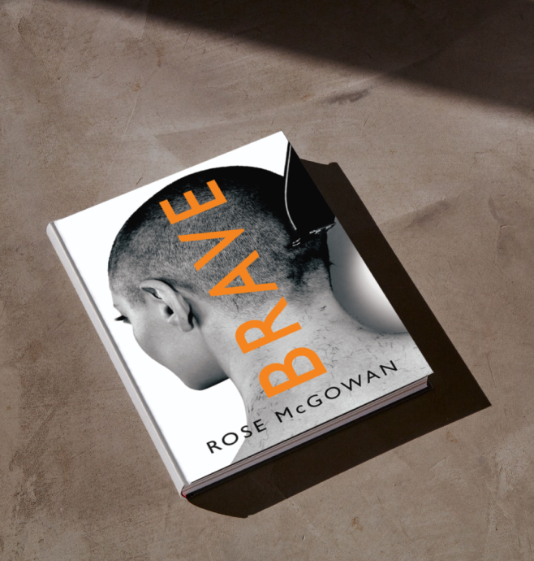

Смелая
Роуз Макгоуэн. 2022
Автобиографическая книга, написанная актрисой, режиссером и общественной активисткой Роуз Макгоуэн. Она рассказывает о сложностях, с которыми ей пришлось столкнуться за время работы в Голливуде, харассменте со стороны Харви Вайнштейна. «Смелая» — это сложный рассказ от лица женщины, которой пришлось страдать от жестокости и домогательств с раннего возраста. В этой книге Роуз пытается исповедаться и дать оценку всем событиям своей жизни, найти себя настоящую и получить немного любви.
Подробнее о книге